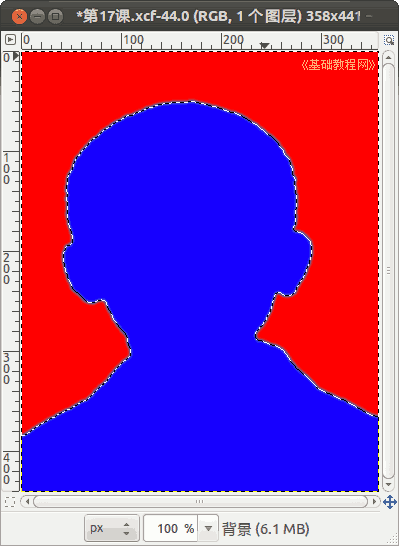

2014-2015 第一学期八年级图像处理教学设计
作者：TeliuTe 来源：基础教程网
十七、更换背景 返回目录 下一课
（一）教学设计
1、学习目标：gimp基本操作，图片处理，图像特效
2、注意事项：绕过弯来，既不要跳也不要落，一楼过了二楼
3、教学过程：
1）教师准备学案和板书；
2）学生整队进入，开机抄黑板上笔记；
3）教师讲解板书演示操作；
4）学生打指法、日志、完成操作；
5）教师打勾记录学生指法成绩，检查日志和操作；
注：学生抄完笔记就开始打指法、日志，老师讲完后再继续完成；
（二）板书设计(学生笔记)
17更换背景
1.准备好图片，用gimp打开
2.用魔术棒，叠加选中背景
3.编辑，清除，选择，增长，清除
4.羽化使边缘柔和
操作图示：

（三）课后记
第17课学会更换背景
1、到相册下载自己的照片
2、打开照片，魔术棒，15，叠加选区
3、点编辑，清除，选择，增长，清除，羽化5
4、油漆桶，红色填充，另存
--
2014年11月12日 星期三 17:40
--
把学生的学籍照片翻出来，做一课修改背景的
记得魔术棒前面学过，想了半天才知道是奥运五环里面擦除交点用过
--
看到照片学生激动的，吵吵闹闹这边说完那边又开始
可能是回忆起以前的时候了，女生都不大想让自己的照片上去
--
提前要给学生讲好，用自己的照片，不许动别人的，后果自负
得反复强调才行，还要把起哄的限制住。4班没太注意就麻烦些
--
照片过一会就删除了，有一两个学生没下载，让找别的图片练习
养成一个好的习惯，学习分心弄别的就干扰学习
--
意思很简单，操作比较麻烦，选中图片后清除后，会留下一个白边
需要用增长来扩一下边，女生头发有些，用毛笔选一下即可，
--
发现错误立刻撤销，擦不掉的可以用反转，
用叠加模式，把小阴影都加入选区，学习不要着急
--
照片不用上传，另存一下即可，xcf存也行不存也行
新来的学生没有照片，得到学籍里找一下
--
选择的蚂蚁线，要求多注意，分清楚内外
返回目录 下一课
本教程由86团学校TeliuTe制作|著作权所有
基础教程网：http://teliute.org/
美丽的校园……
转载和引用本站内容，请保留作者和本站链接。